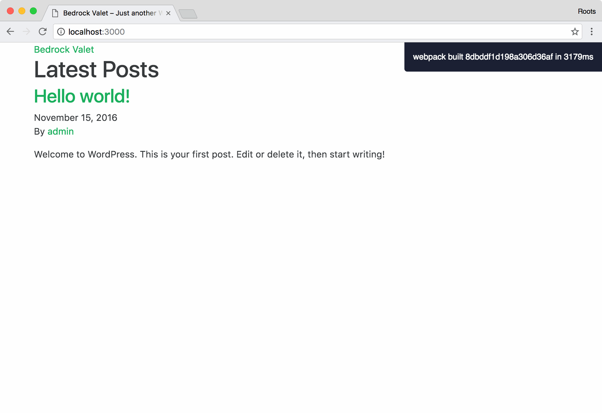
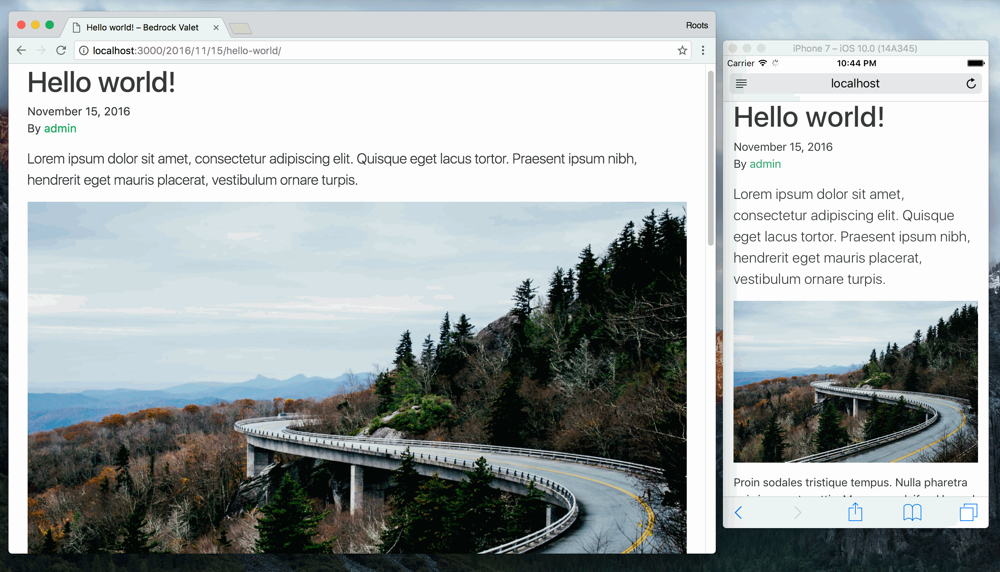

Browsersync
When you run yarn start from the terminal, Browsersync will watch for changes made to your front-end assets and automatically inject the changes into your browser session.
Browsersync is a huge time saver during responsive, mobile-first web design, and goes above & beyond live reloading:
- Synchronized page positions — scrolling on one device or browser is mirrored to all open sessions
- Form replication — any data entered into forms on one device or browser is mirrored to all open sessions
- Click mirroring — clicks are mirrored to all open sessions
Before you run yarn start you’ll need to tell Browsersync the URL of your WordPress installation. Update devUrl at the bottom of assets/config.json to reflect your local development hostname:
"devUrl": "http://example.test",
If you normally access your development site at http://localhost:8888/example/, your devUrl would look like:
"devUrl": "http://localhost:8888/example/"
Now run yarn start — momentarily a new tab will open up on your default web browser that’s pointed to the Browsersync session.
[BS] [HTML Injector] Running...
[Browsersync] Proxying: http://example.test
[Browsersync] Access URLs:
----------------------------------
Local: http://localhost:3000
External: http://10.0.0.6:3000
----------------------------------
UI: http://localhost:3001
UI External: http://10.0.0.6:3001
----------------------------------
[Browsersync] Watching files...
Webpack and Browsersync will work together and inject the latest assets into your browser as you work on your theme:

Since Browsersync keeps devices synchronized, it becomes useful when pulling up Simulator.app to emulate iOS devices while also developing your site on a desktop browser.

Note: In your terminal you'll notice an update from Browsersync when you're saving PHP files in your project:
[BS] Watching files...
[BS] File changed: templates/page.php
Browsersync watches files based on what's defined in config.json:
"watch": [
"templates/**/*.php",
"app/**/*.php"
],
Browsersync and the WordPress admin
One thing to keep in mind when working in a Browsersync session while logged into the admin is that WordPress hardcodes URLs in the database.
For instance, if from your Browsersync session you ended up in the admin and uploading a new image to a post, the image source in the database will have the Browsersync session URL (http://localhost:3000) rather than your development URL (http://example.dev).
If the development database you're working off on is ever going to be pushed up remotely, you might want to add the Browsersync URL to the search & replace that you typically run. The best practice is to make changes from in your WordPress admin from your development URL rather than the Browsersync proxy URL.
Triggering a reload on post save
If you'd like Browsersync to trigger a reload when a post is saved in the WordPress admin, add the following to app/filters.php
/**
* Browsersync reload on post save
*/
add_action('save_post', function () {
// WP_ENV must be set on your development environment in order for this to work
// This is already defined if you are using Bedrock
if (WP_ENV === 'development') {
$args = ['blocking' => false];
wp_remote_get('http://localhost:3000/__browser_sync__?method=reload', $args);
}
});
Thanks to Joe Moller for contributing the snippet above on Roots Discourse.